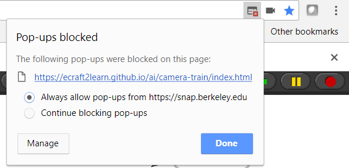

This chapter of the guide includes many interactive elements that currently only run well in the Chrome browser. This chapter relies upon there being a camera that the browser can access. Note that the blocks described here create a second browser tab for "training" the system. The first time the "Train using camera ..." block is run you may see it blocked as a "popup".
To fix the problem click the tiny icon that shows a page with a red box containing a white 'x' and select 'Always allow popups from ...'.
After allowing popups you may need to refresh the page.
There is a troubleshooting guide that should be consulted if problems are encountered.
This chapter will be written soon. It will include this nice video.